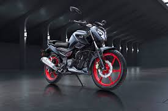

As a proud owner of the TVS RAIDER 125 SXC,I have spent nearly 10 months testing the bike's capabilities and functionalities.
Here's a Honest review from my experience with the bike
The first thing that drew my attention was the bike's stylish design and it's color patterns. After taking a test drive, I was
fascinated with it's instrument cluster, tractability, exhaust note, light weight, seat comfort, and seat height. I bought my bike
at MG TVS Peerkankaranai showroom. The manager was a friendly person and
helped me get the bike delivered within a short span of time.
| Engine Capacity | 124.8 cc |
| Milege | 55 kmpl* |
| Transmission | 5 Speed Mannual |
| Kerb Weight | 123 kg |
| Seat Height | 780 mm |
| Top Speed | 108 kmph* |
| Fuel Tank Capacity | 10 litres |
| Instrument cluster | Fully Digital |
* Owner reported
TVS Raider has an powerful acceleration in the low end (great low end torque), so we get a good pickup, however the pull decreases in the mid and high end suggesting it is not built for such high speed runs. This may seem a safe option, but at times when we need a sudden surge in power ,during a overtake for example, it makes the process difficult, risky and does not the provide the confidence to the rider. It has two ride modes, ECO and POWER. While ECO mode is tuned for city and fuel efficiency, POWER mode enables maximum power delivery. The ECO mode limits the top speed at 95kmph.
The Seat comfort is good, but I wouldn't recommend it for long rides,as it gradually stiffens with time. After riding for about 1 hour, I felt some heat from my knees to toes while in traffic,but it's easily manageable and is definitely not a flaw. The Handling of the bike is so smooth and the bike feels very agile with it's light weight and short turning radius, making it easy for manuvaring in traffic. The clutch lever is a bit hard but can be adjusted to some extent to your convience. This bike has a SBT, which means when you apply rear brake, the front brake is also applied automatically through mechanical means. However, the front brake provided an unsatisfactory response when tested independently.
Here's a expert opinion from bikewale.com
It is safe to say that the new TVS Raider 125 is among the best 125cc motorcycles, if not the best, in its price segment of the Indian market today. The styling is appealing while the engine performance and handling characteristics are praiseworthy. The only downside that we found was the lack of headlight performance in the high-beam and the unsatisfactory response from the front brake, but the pros outrun the cons by a big margin, and the TVS Raider 125 should be a serious contender on your buying list if you’re in the 125cc market for a new motorcycle.
If you are interested in buying the bike I would recommend you go with Split seat-Disc varient or the Super Squad variant.
I feel that these are the price worthy models of this bike.
You can get these at just ₹ 1,33,874 ₹ 1,23,011
for Split seat-Disc varient or ₹ 1,28,087 for super Squad varient.
NOTE: The prices mentioned here are On-Road prices in Chennai.